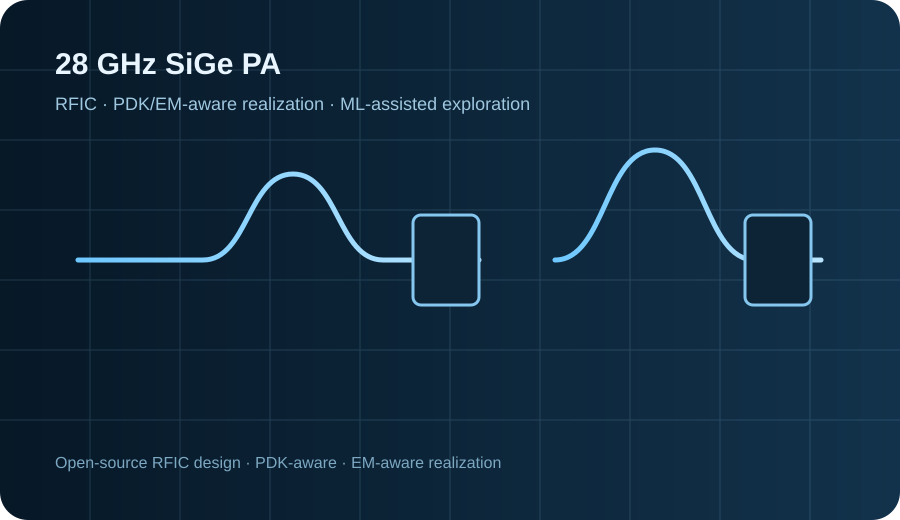

Open-Source RFIC Design & Verification of a 28 GHz Two-Stage Class-A SiGe Power Amplifier
Designed and simulated a two-stage 28 GHz Class-A SiGe power amplifier using the IHP SG13G2 130-nm SiGe BiCMOS Open PDK and an open-source RFIC workflow based on Qucs-S, ngspice/Xyce, KLayout, and EM-aware modeling.
- Developed a progressive ideal-passive → PDK-aware → EM-aware realization workflow.
- Final process-aware small-signal configuration achieved approximately 17.4 dB gain at 28 GHz, with S11/S22 around −13 dB and K = 12.
- Explored ML-assisted design-space screening and optimization; a thesis-derived manuscript has been submitted to ICCIT 2026.
IHP SG13G2Qucs-Sngspice/XyceKLayoutRFIC